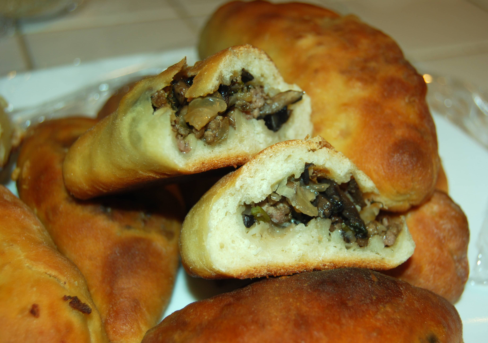

Image Credit
Pirozhki
Pirozhki are small, stuffed buns in Russian cuisine, filled with a variety of ingredients like meat, cabbage, or potatoes, and baked to golden perfection.
Cook time
120 minutes
Calories
450
Instructions
- Prepare dough by combining flour, yeast, sugar, salt, water, and oil.
- Knead dough until smooth, cover, and let rise for 1 hour.
- For the filling, sauté ground meat with onions until cooked through.
- Season with salt and pepper.
- Preheat oven to 375°F (190°C).
- Divide dough into small portions and roll into balls.
- Flatten each ball into a circle.
- Place a spoonful of filling in the center of each circle.
- Fold dough over filling and pinch edges to seal.
- Place buns on a baking sheet and bake for 20-25 minutes, until golden brown.
Recipe Credits: Link